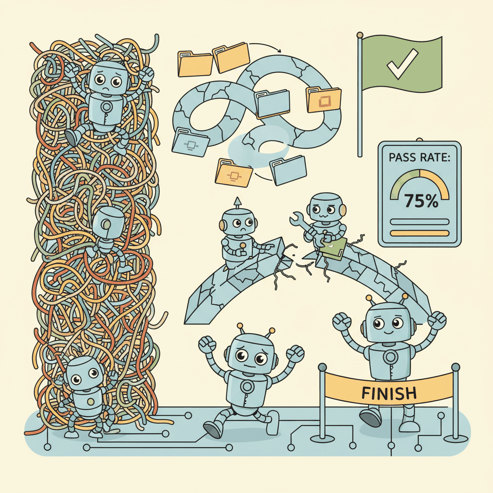

"An agent that gets the right answer half the time, but bricks your database the other half, has a zero-percent useful success rate."
Eval, Vibe-Averse AI Agent
Agents break every assumption that classical NLP evaluation rests on. A standard NLP benchmark compares a single model output against a reference string; an agent produces a trajectory: a sequence of tool calls, observations, side effects, and partial outputs spread over minutes or hours of wall time. The same task can succeed through multiple correct paths and fail in multiple instructive ways. Side effects mean re-running a benchmark mutates the world, so eval is no longer idempotent. This section walks through the 2024-2026 agentic benchmark cube, AgentBench, BFCL, SWE-Bench and SWE-Bench Verified, GAIA and ARC-AGI-2, WebArena and OSWorld, τ-bench, τ²-bench, and MM-τ-p2, the trajectory eval primitives (success-at-N, partial credit, exact-match-at-final-state), the dual-control evaluation pattern introduced by τ²-bench, the contamination problem at scale, and the surprisingly large cost of running a 200-task benchmark on a moderate agent. We close with a contamination-check code fragment and a forward pointer to eval-as-product workflows.
Prerequisites
This section assumes familiarity with agent architectures from Section 26.1 and tool calling from Section 27.1. The eval foundations in Section 42.1 and the RAG eval patterns in Section 43.1 are useful context, especially the layered-eval idea, which extends naturally to trajectories.
Before we look at benchmarks, it is worth being clear about what makes agentic eval hard. Two properties of agent runs break standard test infrastructure.
43.2.1 Why Standard NLP Eval Does Not Work for Agents

Standard eval assumes (1) a single input produces a single output, and (2) the same input always produces the same output (modulo sampling temperature). Both fail for agents.
- Rollouts have state. An agent that calls
search_emails(...)at step 2 sees results that depend on which emails arrived since the previous call. The same task at 9am and at 5pm can have different correct answers because the environment changed under the agent. - Tool calls have side effects. An agent that calls
send_email(...)orcommit_database(...)mutates the world. Re-running the benchmark requires resetting the environment, which is non-trivial when "the environment" is a real SaaS account, a real GitHub repo, or a real Docker container. - Multi-step trajectories have many correct paths. A task like "find the cheapest direct flight from SFO to JFK on Friday" can be solved by calling Google Flights, Kayak, ITA Matrix, or by chaining a web-search call with a price-aggregator API. All paths produce the same correct final answer; partial-credit evaluation has to recognize all of them.
- Partial successes are common. An agent that gets 4 out of 5 sub-tasks right is much more useful than one that gets 0. Binary pass/fail throws away signal; per-step partial credit (e.g., Levenshtein over step sequences, or weighted sub-task success) preserves it.
The single most useful primitive in agentic eval is the goal-state diff: rather than scoring the agent's text output, you snapshot the relevant environment state before and after the run, and compare it against a target state. For τ-bench's retail and airline domains, this is a database row diff. For SWE-Bench, it is a "did the patch pass the hidden tests" check. For browser agents, it is a comparison of DOM state or downloaded files. The agent's chat output becomes evidence, not the score.
43.2.2 The 2024-2026 Agentic Benchmark Cube
The agentic benchmark landscape between 2024 and 2026 is best understood as a multi-axis cube. Each axis stresses a different agent capability; production agents are usually evaluated on a slice across multiple axes, not on a single benchmark.
| Axis | Headline Benchmarks | What It Stresses | Scoring Primitive |
|---|---|---|---|
| Tool use | AgentBench (2023, refreshed 2024-26), BFCL (Berkeley Function Calling Leaderboard, 2024-26) | Tool selection, argument filling, multi-turn tool chaining | Per-task success rate, function-arg exact match |
| Software engineering | SWE-Bench (2023), SWE-Bench Verified (2024), LiveCodeBench (2024-26) | Real GitHub-issue resolution, end-to-end patch quality | Hidden-test pass rate |
| General research | GAIA (2023), ARC-AGI-2 (2024-26) | Multi-step reasoning, web research, multimodal synthesis | Exact final-answer match (graded by humans + judge) |
| Browser control | WebArena (2023-26), Visual WebArena (2024), OSWorld (2024-26) | Real-world web/OS navigation, GUI control | Goal-state DOM/filesystem diff |
| API orchestration | τ-bench (2024), τ²-bench (2025), MM-τ-p2 (2026) | Multi-turn dialogue + tool calls + database state | Database-row goal-state compare |
| Tool decathlon | Atlas, MCP-Atlas (2025-26) | Breadth across many tool ecosystems, MCP-style protocols | Composite per-tool success rate |
A 2026 production-readiness review for an agent typically picks one benchmark per axis to gate on, plus a private golden set drawn from production traffic. Public benchmarks anchor the comparison to peer models; the private set guards against contamination and shape mismatch.
AgentBench and BFCL
AgentBench (Liu et al., 2023, refreshed for 2024-26) covers eight environments: operating system, database, knowledge graph, digital card game, lateral thinking puzzles, web browsing, web shopping, and household. Each environment has a curated task set; the agent is scored on per-task completion. The 2024-26 refreshes added MCP-style tool wrappers and a leaderboard.
BFCL (Berkeley Function-Calling Leaderboard; Patil et al., 2024) targets a narrower question: does the agent select the right function and fill its arguments correctly? BFCL v3 (mid-2025) includes simple, parallel, parallel-multiple, multi-turn, and Java/JavaScript multilingual variants. The headline metric is AST match (does the predicted function call's AST match the gold call) and executable match (does the predicted call actually run successfully).
SWE-Bench and LiveCodeBench
SWE-Bench (Jimenez et al., 2023) is the most influential coding benchmark of the agent era. Each task is a real GitHub issue from a popular open-source Python repo (e.g., Django, scikit-learn) paired with the human-written PR that resolved it. The agent's job is to generate a patch that makes the hidden test suite pass without breaking the existing tests. Pass rate on SWE-Bench is a standard headline metric in 2025-2026 model releases.
SWE-Bench Verified is OpenAI's 500-task curated subset (2024), filtered by humans for clarity, correctness, and solvability. It emerged after the discovery that the original SWE-Bench had test-set leakage in newer model training data and that some tasks were under-specified.
LiveCodeBench (Jain et al., 2024-26) attacks contamination differently: tasks are continuously scraped from competitive-programming platforms (LeetCode, AtCoder, Codeforces) with a date stamp, and models are evaluated only on tasks dated after the model's training cutoff. The benchmark is dynamic by construction.
GAIA and ARC-AGI-2
GAIA (Mialon et al., 2023) tests "general AI assistants" on questions that are easy for humans but hard for current LLMs: questions requiring web research, file manipulation, mathematical reasoning, and multimodal interpretation. Tasks are split into three levels; level 3 tasks routinely take humans 30 minutes and require multiple tool calls.
ARC-AGI-2 (Chollet et al., 2024-26) is the second-generation Abstraction and Reasoning Corpus. The benchmark targets fluid intelligence: each task is a small grid-puzzle that requires inferring a transformation rule from a handful of examples. ARC-AGI-2 raised the difficulty floor relative to the original after large models began passing it; the 2025 leaderboard saw single-digit pass rates from frontier models.
WebArena and OSWorld
WebArena (Zhou et al., 2023-26) provides a Dockerized environment with self-hosted clones of GitLab, Reddit, an e-commerce site, a CMS, and a map service. Tasks are realistic web workflows ("file a bug report with the following label and assignee") scored by goal-state DOM diff. OSWorld (Xie et al., 2024-26) extends this to full Linux/Windows desktop environments, including image-editing, spreadsheet, and IDE tasks; scoring uses filesystem and process-state inspection.
τ-bench, τ²-bench, MM-τ-p2
τ-bench (Yao et al., 2024; arXiv 2406.12045) is the methodological standout of the family. The benchmark places an agent in a customer-service role, interacting with a simulated user (powered by a second LLM) and a backend database. The task is to satisfy the user's underlying intent, which the user describes naturally but does not state as a structured goal. Scoring is by database-state diff against a target state: did the agent correctly issue a refund, update a flight, or modify the right record?
τ²-bench (Barres et al., 2025; arXiv 2506.07982) extends this to dual-control settings: both the agent and the simulated user can update state. This models real-world coordination tasks where the user might, for instance, share a credit-card number that the agent then enters, or where the user updates their own profile while the agent updates the booking. Goal-state diff is still the scoring primitive, but the trajectory space is wider because either party can advance the state.
MM-τ-p2 (Persona-Adaptive Multi-Modal Agent Evaluation; 2026) adds two further axes: multimodal inputs (images, screenshots, PDFs) and persona-adaptive simulated users (different user types have different patience, expressiveness, and adversarial tendencies). The result is a stress-test for production assistants that have to handle the long tail of user variety.
43.2.3 Trajectory Evaluation Primitives
"Higher pass@k means a better agent" is the easiest misreading of agentic leaderboards. Pass@k says "the agent succeeded in at least one of k attempts," so a flaky agent that succeeds 1 in 10 times can post a high pass@10. For a production system you usually care about pass@1 (single-shot reliability) or about the cost-adjusted curve. The token-cost side of agentic eval is often hidden: an agent that needs k=20 samples to reach the same pass@k as another agent's pass@1 is approximately 20x more expensive to run. Always read the k and the average token cost.
Across all of these benchmarks, four scoring primitives recur. Knowing which primitive a benchmark uses tells you what to optimize for.
- Success@N (also called pass@N). Run the agent N times on the same task; score 1 if any run succeeds. Used for sampling-heavy benchmarks like LiveCodeBench. Penalizes flaky agents only if they fail in all N runs.
- Sample efficiency. The inverse: how many trials does the agent need before it succeeds? Reported as expected-trials-to-success or as a pass-rate curve over N. Captures the cost story that pass@N obscures.
- Partial credit via step sequence similarity. Compute a Levenshtein-style edit distance between the agent's step sequence and one of several gold step sequences; award credit proportional to overlap. Used in AgentBench and adjacent suites where many correct paths exist.
- Exact match at final state. The τ-bench primitive: ignore the trajectory entirely, compare the post-run environment state against the target. Conceptually clean; punishes agents that took a side path that happens to produce a worse final state.
Two coding agents on LiveCodeBench: Agent A scores pass@1 = 0.42 and pass@5 = 0.48. Agent B scores pass@1 = 0.31 and pass@5 = 0.58. At pass@1, A wins; at pass@5, B wins. The interpretation is operational: A is a reliable single-shot solver; B is a creative-but-inconsistent solver that benefits from multi-sample voting. If your product surface allows the user to retry (e.g., an IDE plugin where the user can click "regenerate"), B is better. If you can only afford one shot (e.g., a billing-critical pipeline that costs $0.50 per agent invocation), A is better. Reporting only one number hides the choice.
43.2.4 Dual-Control Evaluation: τ²-bench's Methodological Twist
Most agent benchmarks freeze the user. The agent acts; the user is passive (a prompt, a state-mutation by an oracle, or a simulated user that only responds to questions). τ²-bench breaks this asymmetry. In a dual-control rollout, both the agent and the simulated user can call tools, update state, and advance the conversation.
Practically, this models scenarios like: the agent asks the user to upload a passport scan; the user uploads it (a state mutation); the agent then verifies it. Or: the agent suggests a flight; the user counters with a date constraint; the agent re-searches. Or: the agent updates the booking while the user simultaneously updates their profile.
The eval question shifts from "did the agent succeed?" to "did the agent and user, jointly, reach the goal state?" This is closer to real production. A real customer-service agent does not unilaterally drive the conversation; it coordinates.
The simulated user in τ-bench and τ²-bench is itself an LLM. As the simulator model changes (e.g., upgraded from GPT-4 to GPT-4.5), the simulated user behaves differently, and the benchmark's difficulty drifts. Reproducible runs require pinning the simulator model and version alongside the agent model. Many published τ-bench scores fail this and are not directly comparable across papers.
43.2.5 Code: Agent Harness Wired to a Benchmark
The pattern below shows the core loop of an agentic eval harness. It loads tasks from a benchmark spec, runs an agent rollout for each, and scores by goal-state diff against the target state. The harness is benchmark-agnostic: swap the task loader and the diff function and the same loop works for τ-bench, SWE-Bench, or a custom internal suite.
# Minimal agentic eval harness: load tasks, run rollouts, score by goal-state diff, report pass@k
import json
from collections import Counter
def run_one_rollout(agent, task, env, max_steps=25):
"""Reset env, give task to agent, step until done or max_steps reached."""
env.reset(initial_state=task["initial_state"])
obs = env.observe()
for _ in range(max_steps):
action = agent.act(task["prompt"], obs) # LLM call w/ tool schema
obs, done = env.step(action) # execute tool call
if done:
break
return env.snapshot_state() # final environment state
def score_pass_at_k(agent, env, tasks, k=5):
"""For each task, run k rollouts; success if ANY final state matches the goal."""
results = Counter()
for task in tasks:
any_pass = False
for _ in range(k):
final_state = run_one_rollout(agent, task, env)
if goal_state_match(final_state, task["goal_state"]):
any_pass = True
break
results["pass" if any_pass else "fail"] += 1
return results["pass"] / (results["pass"] + results["fail"])
def goal_state_match(final, goal):
"""Benchmark-specific. For tau-bench: row-level diff on the relevant DB tables."""
return json.dumps(final, sort_keys=True) == json.dumps(goal, sort_keys=True)
# Example: run on a 200-task slice of an AgentBench-style suite
tasks = load_benchmark_tasks("agentbench-v2/os/tasks.jsonl")
env = DockerizedOSEnv()
agent = MyAgent(model="claude-opus-4-7", tools=OS_TOOLS)
pass_rate = score_pass_at_k(agent, env, tasks, k=5)
print(f"AgentBench-OS pass@5 = {pass_rate:.3f}")env (must support reset, observe, step, snapshot_state) and goal_state_match (benchmark-specific). The same loop drives τ-bench (DB-state match), SWE-Bench (test-suite pass), and WebArena (DOM diff).43.2.6 The Contamination Problem at Scale
Contamination, the leakage of benchmark items into model training data, is the defining hygiene problem of agentic eval. The 2024-2026 history of SWE-Bench illustrates it:
- SWE-Bench launched in late 2023 with ~2,300 real GitHub issue tasks.
- Through 2024, frontier-model scores climbed unevenly. Some labs reported >50% pass rates; others reported much lower scores with comparable models.
- Investigation showed that some tasks were ambiguously specified (the model had to guess which behavior the issue meant) and that newer training data included resolved PR threads with their solutions inline.
- OpenAI's SWE-Bench Verified (August 2024) curated 500 tasks that human reviewers confirmed were well-specified and not obviously leaked. It became the new standard benchmark; the original SWE-Bench is now described as the "full" version.
- LiveCodeBench took a different tack: dynamic by construction, only score on tasks dated after the model cutoff.
The lessons generalize. Three contamination-resistance patterns are now standard:
- Held-out test sets. Maintain a private test slice that is never published; periodically re-create it from a fresh data source.
- Dynamic benchmarks. Continuously scrape new tasks tagged by date; only evaluate on tasks after the model's training cutoff.
- Sampling by date. Even on static benchmarks, partition tasks by their public-release date and report scores separately for pre- and post-cutoff slices.
Benchmark numbers reported six months after release often disagree with numbers reported at launch. Models change; benchmarks get patched; contamination is discovered post-hoc. Treat every public score as a snapshot, not a fact. When comparing models, prefer benchmark slices dated after both models' training cutoffs, and prefer dynamic benchmarks over static ones for headline claims.
Code: An N-gram Contamination Check
The fragment below computes an n-gram overlap between a benchmark's task strings and a sample of the training distribution. High overlap is a contamination signal. This is the simplest of several contamination detectors; full pipelines also use embedding-similarity, exact-substring matching, and membership-inference attacks.
# Simple n-gram overlap contamination check between benchmark items and a training-data sample
from collections import Counter
def ngrams(text, n=13):
"""Yield word n-grams. 13 is the common threshold for "memorization-suspicious" overlap."""
toks = text.split()
for i in range(len(toks) - n + 1):
yield " ".join(toks[i:i+n])
def build_train_ngram_index(train_docs, n=13):
idx = Counter()
for d in train_docs:
idx.update(ngrams(d, n))
return idx
def contamination_score(bench_item, train_index, n=13):
"""Fraction of benchmark n-grams that also appear in the training index."""
item_grams = list(ngrams(bench_item, n))
if not item_grams:
return 0.0
hits = sum(1 for g in item_grams if train_index[g] > 0)
return hits / len(item_grams)
# Usage: build index once, score every benchmark item, flag the suspicious ones
train_index = build_train_ngram_index(load_train_sample("common-crawl-2024-shard.jsonl"))
suspicious = [
item for item in benchmark_items
if contamination_score(item["text"], train_index) > 0.30
]
print(f"{len(suspicious)}/{len(benchmark_items)} benchmark items flagged for review.")43.2.7 The Cost of Agentic Eval
A 200-task AgentBench run on a moderate frontier agent has a measurable bill. Empirically (mid-2026 figures for Claude- and GPT-class agents):
- Average rollout length: 8-15 steps, of which ~6-12 involve LLM calls.
- Average input context per step: 4-8 KB (system prompt + tool definitions + conversation history); average output: 200-600 tokens.
- Per-rollout LLM cost: $0.30-$0.80 at frontier-model rates.
- 200 tasks × pass@5 sampling = 1,000 rollouts. Total: $300-$800 per benchmark run.
- Add environment-hosting cost (Docker images for WebArena, OSWorld, τ-bench backend): another $20-$80 per run.
The implication for design: full benchmark runs cannot happen on every commit. Production teams typically run a 20-30 task smoke-test slice on every PR (cost: ~$30-100) and a full 200-task run nightly or on release candidates only. Golden-set selection for the smoke-test slice is itself an evaluation problem: pick tasks that are sensitive to the specific changes the team is most likely to make.
By late 2025, several AI labs reported that their internal eval pipelines were consuming more inference compute than their model-training runs. The "eval whale" became a budgeting joke and a real concern: if you spend $500K running benchmarks every week, you have effectively built a second model-training program. Smart teams started building cached rollout traces, deterministic replay environments, and judge-model distillation so the eval bill scaled sub-linearly with model iteration.
- Standard NLP eval breaks for agents. Rollouts have state, tool calls have side effects, multiple paths can succeed, partial credit matters.
- Goal-state diff is the load-bearing primitive. Compare the post-rollout environment to a target state; the agent's text output is evidence, not the score.
- The 2024-2026 cube has six axes. Tool use, software engineering, general research, browser control, API orchestration, tool decathlon. Pick one benchmark per relevant axis plus a private golden set.
- Dual-control settings (τ²-bench) model real coordination. Both agent and user can advance state; pin the simulator model for reproducibility.
- Contamination is the defining hygiene problem. Use held-out test sets, dynamic benchmarks, and sample-by-date partitioning. Treat any single benchmark score as provisional.
- Agentic eval is expensive. A 200-task pass@5 run runs $300-$800 in LLM cost; design for smoke-test slices on every PR and full runs nightly.
You maintain an agent that runs an AgentBench-OS benchmark suite of 200 tasks nightly at a cost of $400/run. Your team merges 20 PRs/week. Design a 25-task smoke-test slice that runs on every PR. Specify: (a) how you select the 25 tasks; (b) what cost/coverage tradeoff you accept; (c) how you detect when the smoke slice has gone stale (no longer correlates with the full 200-task score).
Hint
For each of these production agents, identify which 2-3 benchmarks from the 2024-2026 cube you would gate on and explain why. (a) A pull-request-review agent that comments on code changes. (b) A customer-support agent for an airline that books and modifies reservations. (c) A research-assistant agent that searches the web and synthesizes findings into a brief. (d) A general-purpose "personal assistant" agent that does email, calendar, and browsing.
Answer Sketch
Show Answer
Show Answer
Show Answer
The benchmarks in this section are offline anchors. They tell you how your agent compares to peer models on a published, version-pinned task set. But the agents that ship to real users get exercised by inputs that look nothing like the benchmark, and the failure modes that matter most (a single $50,000 wrong refund, a single security regression) are exactly the ones a 200-task suite cannot guarantee against. §37.7 Eval-as-Product picks up where this section leaves off: how Braintrust, Latitude, and Laminar treat continuous evaluation as a first-class product surface, replaying production traces against new agent versions, surfacing regressions to developers in real time, and turning eval into something developers use, not just a CI step. The two views, benchmark anchors here, eval-as-product there, are how 2026 production-agent teams actually run eval.